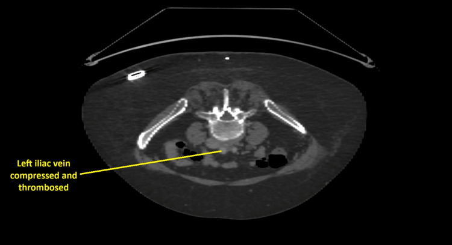

Ficha del catálogo
Compresión de la vena iliaca común
- Sistema
- Cardiovascular
- Modalidad
- TC
- Región
- Pelvis
- Dificultad
- Avanzado
Consiste en el aplastamiento crónico de la vena iliaca común izquierda entre la arteria iliaca común derecha por delante y el cuerpo vertebral lumbar por detrás. La compresión repetida genera bandas fibrosas dentro de la luz y favorece la trombosis venosa profunda iliofemoral izquierda, característicamente en mujeres jóvenes. Explica el claro predominio izquierdo de la trombosis proximal de miembro inferior.
Técnica
La tomografía o la resonancia con contraste en fase venosa permiten ver el punto de cruce y medir la reducción de calibre, siempre con reconstrucciones axiales y coronales. El ultrasonido evalúa el segmento femoral y detecta un patrón de flujo continuo y poco modulado con la respiración, sugerente de obstrucción proximal. La flebografía con ultrasonido intravascular es la referencia en el momento del tratamiento.
Qué observar
- Reducción focal del calibre de la vena iliaca común izquierda en el cruce arterial
- Relación anatómica entre la arteria iliaca común derecha y la vena subyacente
- Colaterales pélvicas dilatadas, presacras y transpélvicas hacia el lado derecho
- Trombo agudo o cambios crónicos postrombóticos en el eje iliofemoral
- Patrón de flujo femoral continuo sin variación respiratoria en el estudio Doppler
- Asimetría de calibre de las venas iliacas y edema del miembro izquierdo
Hallazgos
Se identifica un adelgazamiento focal de la vena iliaca común izquierda justo en el punto donde la cruza la arteria iliaca común derecha, con dilatación del segmento distal y desarrollo de colaterales pélvicas. Cuando hay trombosis se observa una vena distendida y no opacificada que se extiende al eje femoral. En las formas crónicas aparecen sinequias intraluminales que el ultrasonido intravascular demuestra mejor que la flebografía.
Perlas
Cierto grado de aplanamiento de la vena iliaca izquierda en el cruce arterial es un hallazgo frecuente y asintomático en la población general, de modo que solo debe informarse como significativo cuando se acompaña de colaterales, de trombosis o de síntomas concordantes en el miembro izquierdo.
Diagnóstico diferencial
- Compresión por masa pélvica o adenopatías
- Se identifica la lesión responsable y la compresión no coincide con el punto de cruce arterial.
- Trombosis venosa profunda de otra causa
- Afecta con igual frecuencia ambos lados y no muestra estrechamiento focal en el cruce.
- Fibrosis retroperitoneal
- Existe un manguito de tejido blando periaórtico e iliaco que engloba también los uréteres.
- Compresión fisiológica sin repercusión
- Hay aplanamiento focal aislado sin colaterales, sin trombo y sin síntomas.
Simuladores
- Vena colapsada por deshidratación o por maniobra de Valsalva durante la adquisición
- Mezcla de contraste en fase venosa que simula defecto de repleción
- Aplanamiento fisiológico en pacientes delgados
Por modalidad
- TC
- Muestra el punto de cruce, el grado de compresión, las colaterales y la extensión del trombo.
- US
- Detecta el trombo femoral y sugiere obstrucción proximal por la pérdida de la modulación respiratoria del flujo.
Protocolo
Tomografía abdominopélvica en fase venosa con retraso suficiente para opacificar bien el eje iliocavo, con cortes finos y reconstrucciones coronales y sagitales del cruce. En el ultrasonido se registra el flujo femoral común en reposo y con maniobras respiratorias comparando ambos lados. La valoración definitiva se completa en la sala con ultrasonido intravascular.
Clasificación
Errores frecuentes
- Informar como patológico un aplanamiento fisiológico sin colaterales ni síntomas
- No valorar el eje iliaco ante una trombosis femoral izquierda en una mujer joven
- Realizar el estudio en fase arterial y no opacificar las venas pélvicas

vena iliaca compresión venosa trombosis iliofemoral pelvis colaterales fase venosa miembro inferior izquierdo